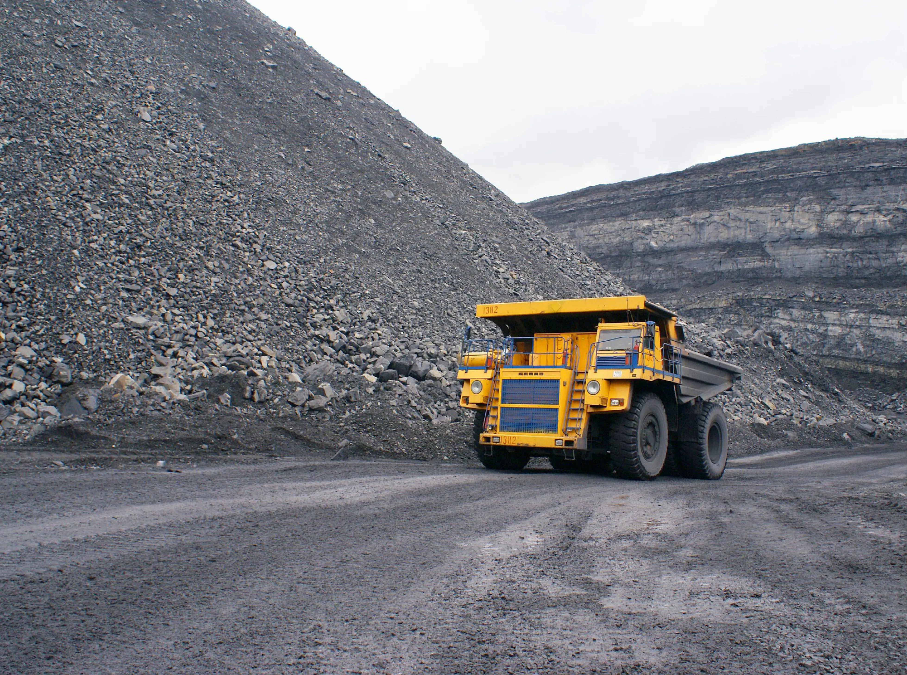

Calculation of
Carbon Emission.
Carbon Emission.
Carbon Neutrality Pathways Clean technologies: Assess the impact of adopting electric vehicles, methane capture systems, and renewable energy sources. Afforestation offsets: Estimate the land required for tree plantation based on state-specific afforestation plans. Other renewables: Explore alternative energy sources like solar or wind power for mine operations. Carbon credits: Estimate potential carbon credit earnings based on market rates.
To summarise the various studies, it can be concluded that annual CO2 offsetting ranges from 21.77 kg CO2/tree to 31.5 kg CO2/tree. This means that one tonne of CO2 can be offset by 31 to 46 trees. Europe has 300 to 500 trees per hectare. The calculation for the figures on the Encon website is based on 24 kg CO2/tree and an average of 500 trees per hectare. For 1 hectare of forest, this means: 500 trees x 24 kg CO2/tree = 12,000 kg CO2 offset or 12 tonnes CO2/hectare.